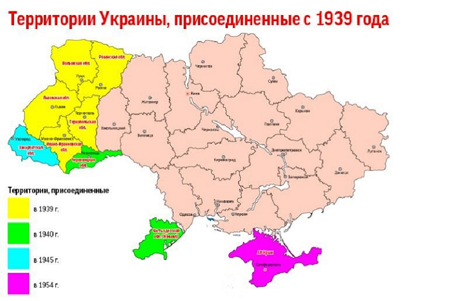

УССР
Украи́нская Сове́тская Социалисти́ческая Респу́блика (УССР, Украинская ССР[1]; укр. Українська Радянська Соціалістична Республіка, УРСР, Українська РСР) — социалистическое украинское государство, провозглашённое на части территории бывшей Российской империи 10 марта 1919 года; одно из государств-основателей СССР, с 1922 года — союзная республика в его составе.
УССР была провозглашена 10 марта 1919 года (как преемственная большевистской УНРС, провозглашённой 25 декабря 1917 года и юридически просуществовавшей до марта 1918). После окончанием Гражданской войны стала сооснователем Союза ССР 30 декабря 1922 года и вошла в его состав как союзная республика. В 1939—1940 годах территория УССР была увеличена благодаря присоединению Западной Украины и Северной Буковины, в 1945 году — Закарпатской Украины, в 1954 — Крыма.
Располагалась на юго-западе Европейской части СССР. После Великой Отечественной войны на западе и юго-западе УССР проходила государственная граница СССР с социалистическими странами: Польшей, Чехословакией, Венгрией, Румынией. На севере граничила с Белорусской ССР, на востоке и северо-востоке — с РСФСР, на юго-западе — с Молдавской ССР. На юге территория УССР омывалась водами Чёрного и Азовского морей. УССР была третьей по площади после РСФСР и Казахской ССР и второй по населению после РСФСР республикой СССР. Площадь — 603,7 тыс. км2. Население — 49,1 млн чел. (на 1 января 1976). Столица — г. Киев.
До принятия Конституции СССР 1936 года официально именовалась Украинская Социалистическая Советская Республика.
24 августа 1991 года Верховный Совет Украинской ССР принял Акт провозглашения независимости и постановление «О провозглашении независимости Украины». Этими документами были провозглашены независимость Украины и создание самостоятельного украинского государства. В соответствии с актом, территория Украины является неделимой и неприкосновенной и отныне на её территории действуют исключительно Конституция и законы Украины. Акт провозглашения независимости был подтверждён на референдуме 1 декабря 1991 года.
Карта УССР с 1934 года
[ОБРАТНО НА ГЛАВНУЮ] [ОБРАТНО К РЕСПУБЛИКАМ]